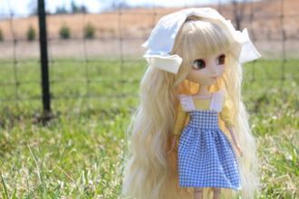
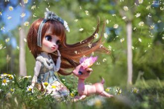
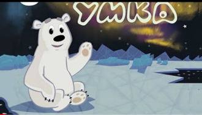

Припев:Колёсики, колёсики и красивый руль!Дворники работают, водичка льёт буль-буль.Включаем зажигание и левый поворот,
В мыслях я навещаюДомик наш за рекой.Как живёшь ты, родная?Сыну сердце раскрой.
За рекой непогода,За рекою туманы,За холодным туманомГде-то солнце встаёт.Только мама седая,Моя милая мама,У крылечка родного
Я по ладони линиямИскала не тех, наивная,Не вопреки, а во имя любви.Просто держи меня за руку, Прямо до самой старости.
I'm never gonna dance againGuilty feet have got no rhythmThough it's easy to pretendI know you're not a fool
You are..You areall I'll ever need.You're my everything!
You're my everythingThe sun that shines above youMakes the bluebird singThe stars that twinkle way up in the skyTell me I'm in love
dizel oerte ai
За печкою поет сверчок,Угомонись, не плачь, сынок.Вон, за окном морознаяСветлая ночка звёздная.Светлая ночка звёздная.
Лунный свет в окошко,Звёзды в небесах.Спи, мой милый крошка,Закрывай глаза.
Спи, моя радость, усни.В доме погасли огни,Птички притихли в саду,Рыбки уснули в пруду.Месяц на небе блестит,Месяц в окошко глядит.
Землю окутала тихая ночь.Сжав кулачок, сладко спит моя дочь.Сон безмятежный склонился над ней,Тихо качая её колыбель.
Гляжу в озера синие,В полях ромашки рву...Зову тебя Россиею,Единственной зову.
(Дам да ди дамДа-ди-да-ди-да-ди-дамДа ди дам. Да-ди-дам. Ди дам.Да-ди дам. Да-ди дамДа-ди-да-ди-да-ди-дамДа ди дам. Да-ди-дам. Ди дам.)
It's been a long timeSince our ships set sailAll along a muddy riverUntil we reached out for the sea.We were crossing miles and miles.

I'm gonna send him to outer space,
To find another race.
...

You lit a candle in my heartYou said it'd never fade awayA little flicker at the startNow a full blown flame

Ложкой снег мешая,
Hочь идет большая,
Что же ты, глупышка, не спишь?
Спят твои соседи,
Белые медведи,
Спи скорей и ты, малыш.
Я пам’ятаю час, коли лиш починався світ
Хто міг, той підіймався та йшов.
Ішов собі високо в гори, взявши у похід
Свою надію сильну, як любов.
Выглянуло солнышкоИз-за серых туч.Золотистым зёрнышкомПрыгнул первый луч.